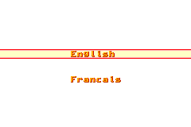

Back to Stone (USA) (En,Fr)
Stateless / Passcode
Cartridge Identity
- Game Code
BBCE(FamilyBBC)- Header Title
BACKTOSTONE- Maker / Revision
GG/ rev0- ROM Size
- 4.0 MiB (4,194,304 B)
- Save Media
None / Unknown- SHA-256
af9223dae1611a24c204a907ca33063557821c91d99bbe093659851c78183096
Screenshots


Cartridge Storage Architecture: Stateless / Passcode
Zero non-volatile battery hardware: This cartridge PCB contains ROM only (no SRAM, Flash, or EEPROM chips). Progression is preserved via on-screen passcodes or session-only gameplay. No
.sav file is generated or required.
Hardware MMIO Subsystems
ppu_display0x83b9dec,0x83da14c,0x83da4d8,0x83f3d78
Regional Variants & Revisions (Family BBC)
- Back to Stone (Europe) (En,Fr) (
BBCP, 4 MiB)